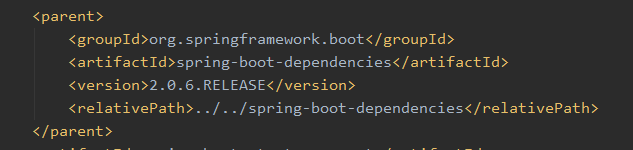
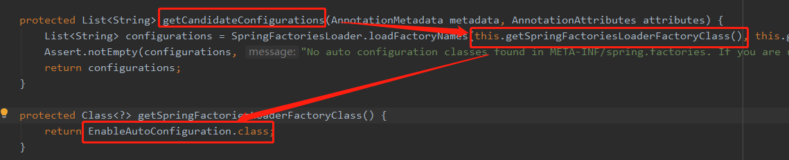

演变
学习
javase：OOP
mysql：持久化
html+css+jQuery+框架：视图
javaweb：独立开发MVC三层架构的网站：原始
ssm：框架，简化了我们的开发流程，配置也开始复杂起来
war：tomcat运行
spring再简化：springboot - jar：内嵌tomcat；
服务越来越多：springcloud
什么是SpringBoot 0. 架构 MVC三层架构
MVVM
微服务架构
all in one的架构方式，我们把所有的功能单元放在一个应用里面。然后我们把整个应用部署到服务器上。如果负载能力不行，我们将整个应用进行水平复制，进行扩展，然后在负载均衡。
发展演变史 https://dubbo.apache.org/zh/docs/v2.7/user/preface/background/#m-zhdocsv27userprefacebackground
1. Spring Spring是为了解决企业级应用开发的复杂性而创建的，简化开发
为了降低Java开发的复杂性，Spring采用了以下4种关键策略：
1、基于POJO的轻量级和最小侵入性编程，所有东西都是bean；
2、通过IOC，依赖注入（DI）和面向接口实现松耦合；
3、基于切面（AOP）和惯例进行声明式编程；
4、通过切面和模版减少样式代码，RedisTemplate，xxxTemplate；
约定大于配置
2. SpringBoot
为所有Spring开发者更快的入门
开箱即用 ，提供这种默认排至来简化项目配置内嵌式容器简化Web项目
没有冗余代码生成XML配置的要求
创建SpringBoot项目 1. SpringBoot官网创建
配置完成后点击 generate 即可下载项目压缩包
2. 使用idea创建（推荐）
此时可以看到对应官网的Spring Initializr，以及默认的地址就是官网Spring Initializr的地址
启动SpringBoot热部署
3. 初始项目pom.xml解析 1 2 3 4 5 6 7 8 9 10 11 12 13 14 15 16 17 18 19 20 21 22 23 24 25 26 27 28 29 30 31 32 33 34 35 36 37 38 39 40 41 42 43 44 45 46 47 <?xml version="1.0" encoding="UTF-8"?> <project xmlns ="http://maven.apache.org/POM/4.0.0" xmlns:xsi ="http://www.w3.org/2001/XMLSchema-instance" xsi:schemaLocation ="http://maven.apache.org/POM/4.0.0 https://maven.apache.org/xsd/maven-4.0.0.xsd" > <modelVersion > 4.0.0</modelVersion > <parent > <groupId > org.springframework.boot</groupId > <artifactId > spring-boot-starter-parent</artifactId > <version > 2.2.1.RELEASE</version > <relativePath /> </parent > <groupId > com.demo</groupId > <artifactId > demo-engin</artifactId > <version > 0.0.1-SNAPSHOT</version > <name > demo-engin</name > <description > Demo project for Spring Boot</description > <packaging > war</packaging > <properties > <java.version > 1.8</java.version > </properties > <dependencies > <dependency > <groupId > org.springframework.boot</groupId > <artifactId > spring-boot-starter-tomcat</artifactId > <scope > provided</scope > </dependency > </dependencies > <build > <finalName > demo</finalName > <plugins > <plugin > <groupId > org.springframework.boot</groupId > <artifactId > spring-boot-maven-plugin</artifactId > </plugin > </plugins > </build > </project >
项目结构 代码结构 默认情况下后台代码必须放在启动类的同级或次级，不能放置再其他地方
否则框架会扫描不到
配置文件位置 配置文件可以存在的位置（按优先级从高到低排列）：file即项目路径，classpath即resources目录
file:./config/
多环境配置 多文件配置多套环境 同样以application开头后面加 -后缀名称 如：application-test.yml
使用时在默认配置文件中添加配置，可以选择激活哪个配置文件：
1 2 3 spring: profiles: active: test
yml单个文件配置多套环境 1 2 3 4 5 6 7 8 9 10 11 12 13 14 15 16 --- spring: config: activate: on-profile: test spring: profiles: test spring: profiles: active: test
自动装配原理 0. 总结
SpringBoot所有的自动配置都是在启动的时候扫描并加载：所有的自动配置类都在autoconfiguration 下的 META-INF/spring.factories中，但是不一定生效。
要判断条件是否成立：只要导入了对应的start，就有对应的启动器了，有了启动器，自动装配就会生效，然后配置成功
SpringBoot在启动的时候，从类路径下 /META-INF/spring.factories 获取指定的值；
将这些自动配置的类导入容器，自动配置类就会生效，帮我们进行自动配置
以前我们需要自动配置的东西，现在SpringBoot都帮我们做了
整合javaEE，解决方案和自动装配的东西都在 spring-boot-autoconfigure-2.3.12.RELEASE.jar 包下
自动装配会把所有需要导入的组件以类名的方式返回，这些组件就会被添加到容器；
spring.factories中存在非常多的XXXAutoConfiguration的文件，就是这些文件给容器中导入这个场景需要的所有组件（@Bean），并自动配置
有了自动配置类，就免去了我们手动编写配置注入功能组件等的工作
思维导图：
原导图地址：https://www.processon.com/mindmap/60c9c9d107912975024b848c
1. pom.xml 1.1 自动装配 按住ctrl 点击pom.xml中的parent标签中的内容查看父工程信息
可以看到父工程还有一层父工程

再次进入：
可以看到有着许多依赖的版本信息
在写入或引入一些SpringBoot依赖的时候，不需要指定版本，就是因为这些版本仓库
1.2. 启动器
启动器就是 dependencies 中以 spring-boot-starter- 命名的依赖
启动器说白了就是SpringBoot的启动场景：
如：spring-boot-starter-web，其会帮我们自动导入web环境所有的依赖
SpringBoot会将所有的功能场景，都变成一个个的启动器
1 2 3 4 <dependency > <groupId > org.springframework.boot</groupId > <artifactId > spring-boot-starter-web</artifactId > </dependency >
1.3 官方文档
2 启动类 1 2 3 4 5 6 7 8 9 10 @SpringBootApplication public class DemoEnginApplication extends SpringBootServletInitializer public static void main (String[] args) SpringApplication.run(DemoEnginApplication.class, args); } }
2.1 注解 @SpringBootApplication 是一个组合注解，点进去可以看到：
1 2 3 4 5 6 7 8 9 10 @SpringBootConfiguration @Configuration @Component @EnableAutoConfiguration @AutoConfigurationPackage @Import({Registrar.class}) @Import({AutoConfigurationImportSelector.class})
获取候选配置：AutoConfigurationImportSelector类中
1 2 3 4 5 6 7 8 9 10 11 12 13 14 List<String> configurations = this .getCandidateConfigurations(annotationMetadata, attributes); protected List<String> getCandidateConfigurations (AnnotationMetadata metadata, AnnotationAttributes attributes) List<String> configurations = SpringFactoriesLoader.loadFactoryNames(this .getSpringFactoriesLoaderFactoryClass(), this .getBeanClassLoader()); Assert.notEmpty(configurations, "No auto configuration classes found in META-INF/spring.factories. If you are using a custom packaging, make sure that file is correct." ); return configurations; } protected Class<?> getSpringFactoriesLoaderFactoryClass() { return EnableAutoConfiguration.class; }
加载标注了 EnableAutoConfiguration 的所有配置

META-INF/spring.factories：自动配置的核心文件
查看 SpringFactoriesLoader.loadFactoryNames 方法
3. 自动配置原理 分析 spring.factories 中的某个配置 HttpEncodingAutoConfiguration
1 2 3 4 5 6 7 8 9 10 11 12 13 14 15 16 17 18 19 20 21 22 23 24 25 26 27 28 29 30 31 32 33 34 35 36 37 38 39 40 41 42 43 44 45 46 47 48 49 50 51 52 53 54 55 @Configuration(proxyBeanMethods = false) @EnableConfigurationProperties({ServerProperties.class}) @ConditionalOnWebApplication(type = Type.SERVLET) @ConditionalOnClass({CharacterEncodingFilter.class}) @ConditionalOnProperty( prefix = "server.servlet.encoding", value = {"enabled"}, matchIfMissing = true ) public class HttpEncodingAutoConfiguration private final Encoding properties; public HttpEncodingAutoConfiguration (ServerProperties properties) this .properties = properties.getServlet().getEncoding(); } @Bean @ConditionalOnMissingBean public CharacterEncodingFilter characterEncodingFilter () CharacterEncodingFilter filter = new OrderedCharacterEncodingFilter(); filter.setEncoding(this .properties.getCharset().name()); filter.setForceRequestEncoding(this .properties.shouldForce(org.springframework.boot.web.servlet.server.Encoding.Type.REQUEST)); filter.setForceResponseEncoding(this .properties.shouldForce(org.springframework.boot.web.servlet.server.Encoding.Type.RESPONSE)); return filter; } @Bean public HttpEncodingAutoConfiguration.LocaleCharsetMappingsCustomizer localeCharsetMappingsCustomizer () { return new HttpEncodingAutoConfiguration.LocaleCharsetMappingsCustomizer(this .properties); } static class LocaleCharsetMappingsCustomizer implements WebServerFactoryCustomizer <ConfigurableServletWebServerFactory >, Ordered private final Encoding properties; LocaleCharsetMappingsCustomizer(Encoding properties) { this .properties = properties; } public void customize (ConfigurableServletWebServerFactory factory) if (this .properties.getMapping() != null ) { factory.setLocaleCharsetMappings(this .properties.getMapping()); } } public int getOrder () return 0 ; } } }
在配置文件中可以配置的东西，都存在一个固有的 xxxAutoConfiguration 文件，而其中又通过注解
其中的属性就是配置文件中可以设置的属性，
ctrl + 左键 点击配置文件中的属性即可跳转到 xxxProperties 类下的该属性的 set 方法中
SpringBoot启动会加载大量的自动配置类
我们看我们需要的功能有没有在SpringBoot默认写好的自动配置类当中;
我们再来看这个自动配置类中到底配置了哪些组件: (只要我们要用的组件存在在其中，我们
给容器中自动配置类添加组件的时候，会从properties类中获取某些属性。我们只需要在配置
启动类 1 2 3 4 5 public static void main (String[] args) SpringApplication.run(DemoEnginApplication.class, args); }
1. SpringApplication 该类主要做了一下四件事情
1、推断应用的类型是普通项目还是Web项目
配置文件 SpringBoot配置文件可以配哪些东西 方法1：查看官方配置文档 

方法2：了解原理 在SpringBoot的父项目中可以看到
SpringBoot配置文件格式 SpringBoot使用一个全局的配置文件 ，配置文件名称是固定的：
application.properties
application.yml
配置文件的作用 ：修改SpringBoot自动配置的默认值，因为SpringBoot在底层都给我们自动配置好了;
内容演示: application.yml
1 2 3 4 5 6 7 8 9 10 11 12 13 14 15 16 name: zhangsan student: name: zhangsan age: 3 student: {name: zhangsan , age:3 }strList: - cat - dog - pig strList: [cat , dog , pig ]
application.properties 只能保存键值对
1 2 3 4 5 6 name = zhangsan student.name = zhangsan student.age = 3
yaml使用 yaml占位符（方法） 1 2 3 4 ${random.int} ${random.uuid}
判断是否存在
1 2 3 4 5 6 person: name: zhangsan dog: name: ${person.name:lisi}_旺财
存在时：
不存在时：
松散绑定 即自动转换
配置文件（使用 - 分隔）：
类中（使用驼峰命名）：
1 2 3 4 5 6 @Data @Component @ConfigurationProperties("person") public class Person private String firstName; }
依然可以注入成功
yaml可以直接给实体类赋值 （使用默认配置文件）@ConfigurationProperties
可用来给配置类注入参数
1 2 3 4 5 6 @ConfigurationProperties(prefix = "person")
@ConfigurationProperties与@Value对比：

注：
名称必须从第一级开始，多级之间使用 . 分隔
如 若此时需要注入person
则：prefix = “object.person”
如果使用该注解，此时使用的地方会报红
解决办法，添加依赖：
https://docs.spring.io/spring-boot/docs/2.1.9.RELEASE/reference/html/configuration-metadata.html#configuration-metadata-annotation-processor
1 2 3 4 5 <dependency > <groupId > org.springframework.boot</groupId > <artifactId > spring-boot-configuration-processor</artifactId > <optional > true</optional > </dependency >
测试类 1 2 3 4 5 6 7 8 9 10 11 12 13 14 15 import com.demo.demoengin.springboot.Person;import org.junit.jupiter.api.Test;import org.springframework.beans.factory.annotation.Autowired;import org.springframework.boot.test.context.SpringBootTest;@SpringBootTest class DemoEnginApplicationTests @Autowired private Person person; @Test void contextLoads () System.out.println(person); } }
配置 1 2 3 4 5 6 7 8 9 10 person: name: zhangsan age: 3 map: {k1: v1 , k2: v2 } list: - code - girls dog: name: 旺财 age: 3
对象 1 2 3 4 5 6 7 8 9 10 11 12 13 14 15 16 17 @Component @Data @ConfigurationProperties(prefix = "person") public class Person private String name; private String age; private Map<String, Object> map; private List<String> list; private Dog dog; } @Component @Data public class Dog private String name; private String age; }
打印结果 1 Person(name=zhangsan, age=3 , map={k1=v1, k2=v2}, list=[code, girls], dog=Dog(name=旺财, age=3 ))
获取自定义文件中的配置信息 1. 直接获取
配置类同级添加自定义配置类
注入
1 2 3 4 5 6 7 @PropertySource(value = "classpath:myconfig.properties") public class Person @Value("${name}") private String name; }
2. 先将自定义配置文件读取到主配置文件中 yaml解决乱码问题
查看哪些配置生效 查看哪些配置生效了，debug: true 其会将配置类生效情况打印在控制台
1 2 3 4 5 6 7 8 9 10 11 12 13 14 15 16 17 18 19 20 ============================ CONDITIONS EVALUATION REPORT ============================ Positive matches: ----------------- Negative matches: ----------------- Exclusions: ----------- Unconditional classes: ----------------------